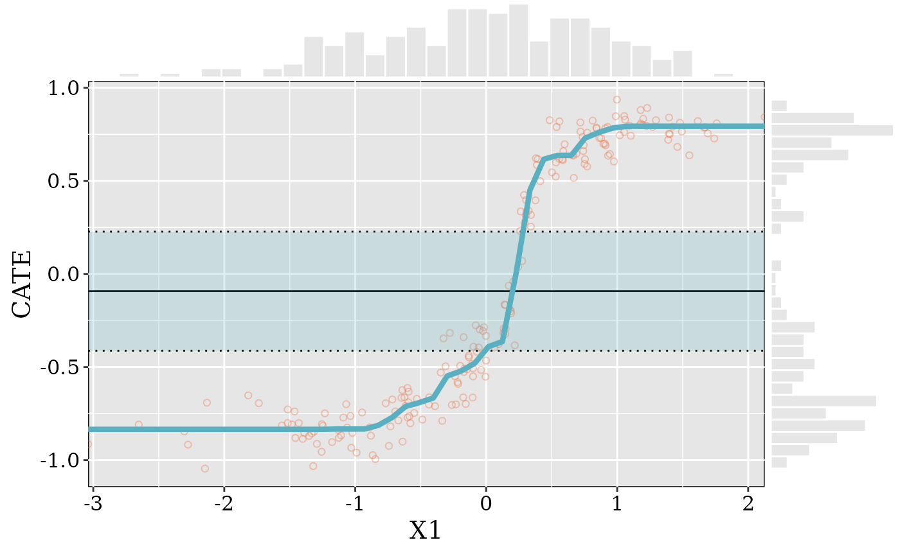
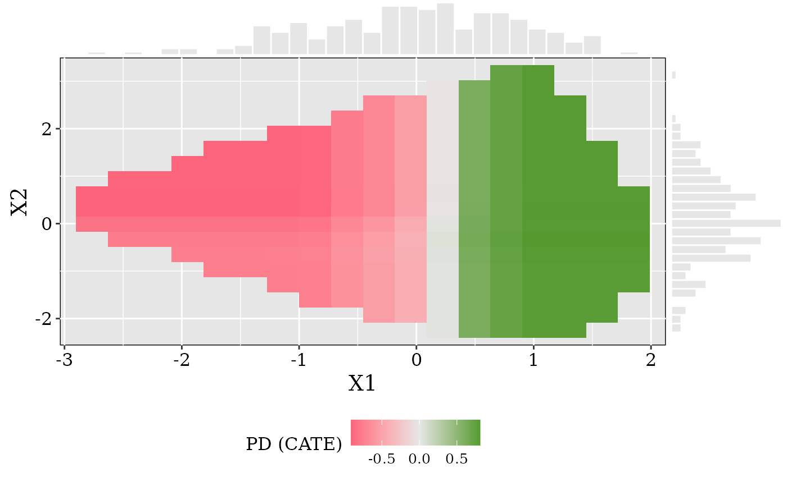
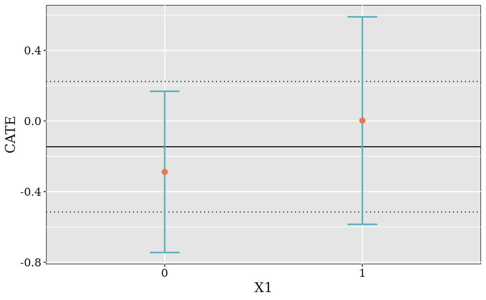

Computes and plots the partial dependence of the CATE on one or two
covariates from a fitted causal forest. Unlike plot_scatter(), which shows
individual OOB CATEs, this marginalizes over the remaining covariates by
averaging predictions across a held-out sample at each grid point
(Friedman, 2001).
Usage
plot_pdp(
c.forest,
x_var,
y_var = NULL,
grid_size = 50,
n_max = 2000,
show_ate_region = TRUE,
show_scatter = TRUE,
trim = TRUE,
x.limits = NULL,
y.limits = NULL,
color.var = NULL,
color.cat = NULL,
color.lab = NULL,
xlab = NULL,
num.threads = NULL,
subgroup = FALSE
)Arguments
- c.forest
A fitted causal forest model object from the
grfpackage.- x_var
Character. Name of the primary covariate.
- y_var
Character or
NULL. If supplied, a 2-way PDP (tile plot) is produced; otherwise a 1-way PDP (line plot).- grid_size
Integer. Number of grid points per variable (default 50). For 2-way PDP the grid has
grid_size^2points, so moderate values are recommended.- n_max
Integer. Maximum rows of the covariate matrix used for averaging. If
nrow(X.orig) > n_max, a random subsample is drawn. Default is 2000 for 1-way PDP and 500 for 2-way PDP (PD averaging converges fast; passn_maxexplicitly to override).- show_ate_region
Logical. Draw ATE +/- 1.96 SE band? Only used for 1-way PDP (default
TRUE).- show_scatter
Logical. Overlay individual OOB CATEs on the 1-way PDP? (default
TRUE).- trim
Logical. For 2-way PDP only: mask grid points outside the convex hull of the training data to avoid extrapolation into unsupported regions (default
TRUE). UsesgrDevices::chull(). Ignored for 1-way PDP.- x.limits
x axis limits specified as c() vector. Defaults to range of the grid.
- y.limits
y axis limits specified as c() vector. Defaults to range of the grid.
- color.var
Character or
NULL. Name of a covariate to split the 1-way PDP by. A separate PD curve is drawn for each level. Only for 1-way PDP.- color.cat
Character vector or
NULL. Labels for the levels ofcolor.var, in order of sorted unique values. IfNULL, the raw values are used as labels.- color.lab
Character or
NULL. Legend title for the grouping variable. Defaults tocolor.var.- xlab
Character or
NULL. Custom x-axis label. Defaults tox_var.- num.threads
Integer or
NULL. Number of threads forpredict(). Passed directly togrf::predict.causal_forest().NULL(default) uses all available threads.- subgroup
Logical. If
TRUE, ignore the partial-dependence machinery and instead plot the doubly-robust (AIPW) subgroup average treatment effect at each observed value ofx_var(and, ify_varis given, each cell of thex_varxy_varcross), viagrf::average_treatment_effect()withsubset =. Intended for binary or low-cardinality integer covariates. 1-way: points with 95% CIs per level. 2-way: a heatmap of subgroup ATEs with a*on cells whose 95% CI excludes 0. Levels aresort(unique(.))with no binning; a level/cell with too few units to estimate is warned and dropped. WhenTRUE,grid_size,n_max,trim,show_scatter,color.var,color.cat,color.lab,x.limits, andnum.threadsare ignored;show_ate_region(1-way reference band),y.limits(1-way only), andxlabstill apply. DefaultFALSE.
Value
A utopia_plot object. For the PDP modes this wraps a ggExtraPlot
with marginal histograms; for subgroup = TRUE it wraps a plain ggplot grob
(no marginal histograms).
Details
Computational cost. Each grid point requires a full predict() call on
the (possibly subsampled) covariate matrix. For 2-way PDPs, grid points
outside the convex hull of the training data are filtered before
prediction when trim = TRUE, which typically removes 30-50\
Combined with a lower default n_max (500 vs 2000), this yields a
~6-7x speedup over evaluating the full grid_size^2 grid.
References
Friedman, J. H. (2001). Greedy Function Approximation: A Gradient Boosting Machine. Annals of Statistics, 29(5), 1189–1232.
See also
plot_scatter() for individual OOB CATEs (not marginalized),
plot.causal_forest() to call this via plot(cf, type = "pdp").
Examples
library(grf)
set.seed(1995)
n <- 200; p <- 5
X <- matrix(rnorm(n * p), n, p)
colnames(X) <- paste0("X", seq_len(p))
W <- rbinom(n, 1, 0.5)
Y <- X[, 1] * W + rnorm(n)
cf <- causal_forest(X, Y, W, num.trees = 100)
plot_pdp(cf, x_var = "X1")

plot_pdp(cf, x_var = "X1", y_var = "X2", grid_size = 20)
#> 191 of 400 grid points trimmed (outside convex hull)

# Discrete subgroup ATE instead of a PDP curve
Xb <- X; Xb[, 1] <- rbinom(n, 1, 0.5)
cfb <- causal_forest(Xb, Y, W, num.trees = 100)
plot_pdp(cfb, x_var = "X1", subgroup = TRUE)
